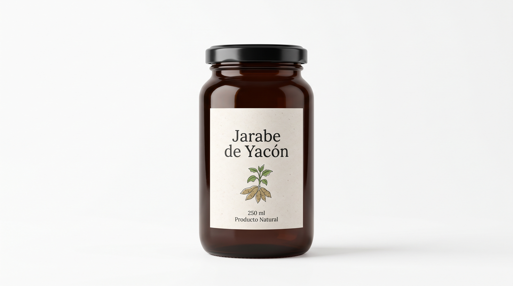
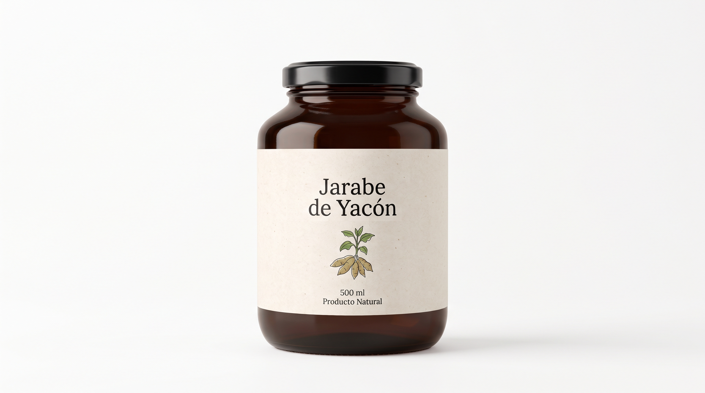
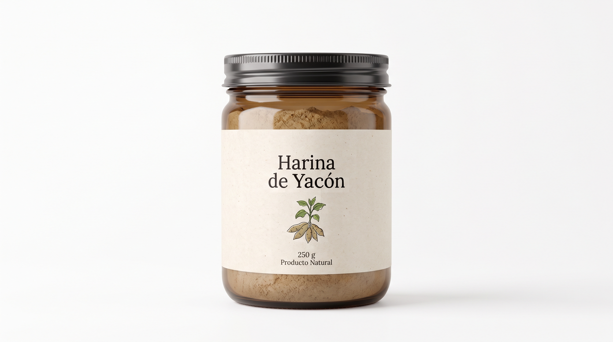

01 / 03
PRESENTACIÓN PROPUESTA
Para descubrir
Jarabe de yacón en presentación de 250 g*.
JARABE DE YACÓN
Un toque de naturaleza en tu día.
Estamos desarrollando distintas opciones para que conozcas el jarabe de yacón. Capacidades y disponibilidad por confirmar.

01 / 03Jarabe de yacón en presentación de 250 g*.

02 / 03Jarabe de yacón en presentación de 500 g*.

03 / 03Harina de yacón en presentación de 250 g*.
* Pesos indicados en las imágenes recibidas; presentación, precio y disponibilidad por confirmar.
 SMALLANTHUS
SMALLANTHUSEl yacón (Smallanthus sonchifolius) es una planta andina cultivada por sus raíces comestibles. Su sabor naturalmente dulce inspira nuestra propuesta de jarabe.
Queremos acercar este ingrediente a más mesas, compartiendo información clara sobre su origen, elaboración y cada presentación.
Descubre el proceso ↗Descripción general basada en fuentes sobre la especie. No documenta el origen ni el abastecimiento de un producto NOMBRE.Estas son etapas referenciales para ilustrar la propuesta. El proceso definitivo se actualizará con información de producción confirmada.
Conversemos sobre el proceso →Identificación y revisión de la materia prima.
Lavado y acondicionamiento de las raíces.
Extracción y concentración por documentar.
Presentación y conservación por confirmar.
Una invitación a explorar distintas formas de incluir el jarabe en tu mesa, siguiendo las indicaciones que acompañen al producto.
Pide ideas y novedades →Avena, panqueques o tostadas.
Prueba nuevas combinaciones.
Ideas dulces, por descubrir.
Compartiremos la procedencia cuando esté confirmada.
Datos del producto respaldados y fáciles de encontrar.
Presentaciones propuestas para distintos momentos.
Un canal directo para consultas y novedades.
Ingredientes, contenido neto, conservación, información nutricional, fabricante y certificaciones se publicarán cuando hayan sido verificados.
DATOS TÉCNICOS EN VALIDACIÓNEsta ficha muestra la información que debería acompañar una presentación comercial. Los valores se completarán cuando exista un producto elaborado y datos verificados.
NOMBRE es una propuesta conceptual desarrollada con fines académicos para explorar cómo presentar un producto derivado del yacón con una identidad visual y una comunicación empresarial.
El sitio funciona como prototipo: las presentaciones, el envase, el proceso productivo, la información comercial y los canales de contacto no representan todavía una oferta real. Para convertir la propuesta en un producto comercial serían necesarias validaciones técnicas, productivas, regulatorias y de mercado.
Objetivos y público planteados para el ejercicio académico; sujetos a revisión mediante investigación de mercado.
Explorar una identidad y una presentación empresarial para un jarabe elaborado a partir del yacón, organizando información de producto, proceso y comunicación.
Facilitar que el público conozca el yacón y pueda consultar información comprensible sobre su procedencia, elaboración y características, una vez documentadas.
Adultos interesados en ingredientes de origen vegetal y nuevas opciones para sus preparaciones, además de tiendas o negocios gastronómicos. Perfil pendiente de validar.
La propuesta busca combinar un ingrediente andino con información clara y formatos pensados para distintos contextos de uso.
El yacón como punto de partida para la identidad del producto.
Una ficha que visibiliza origen, ingredientes y datos técnicos por confirmar.
Presentaciones conceptuales para consumo en casa y posibles clientes comerciales.
Estos elementos expresan la intención del proyecto. No prueban una ventaja frente a otros jarabes; sería necesario comparar productos, precios, atributos y preferencias del público.
Una propuesta responsable empieza por conocer y documentar cada etapa antes de comunicarla como atributo.
Región de cultivo, temporada, prácticas agrícolas y trazabilidad: pendientes de identificar con el proveedor.
POR VERIFICARIdentidad de productores, condiciones de compra y posibles acuerdos: no documentados en esta etapa.
POR DOCUMENTARProcesamiento, uso de recursos, controles y rendimiento: requieren información del productor.
POR VALIDARMaterial, protección, reciclabilidad y disposición final: envase aún conceptual, impacto no evaluado.
POR DEFINIRNo se atribuyen certificaciones, impacto ambiental positivo ni beneficios para productores mientras no exista evidencia específica.
Consulta sobre presentaciones, disponibilidad y condiciones comerciales. Los detalles se confirmarán de acuerdo con la oferta.
Solicitar información ↗¿Tienes comentarios sobre esta propuesta académica? Déjanos un mensaje de demostración.